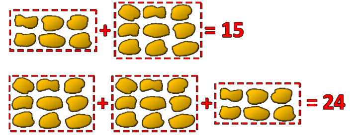
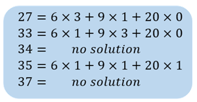
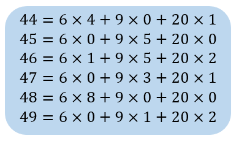

Introduction
不知道大家有沒有吃過新竹美食麥當勞呢?麥當勞是從小到大的回憶，小時候往往只有考試考100分或是特別的日子才有機會可以吃到。在麥當勞當中最受大小朋友歡迎的無非就是酥嫩多汁的麥克雞塊了，然而麥克雞塊除了好吃以外，還有一個非常好玩的數學問題呢！

那這個問題是這樣的，在英國的麥當勞當中，麥克雞塊販售的方式只有6塊雞套餐、9塊雞套餐、以及20塊雞的分享餐。在這樣的品項組合之下，我們能直接買到的雞塊數就會是6、9、20這三個數的組合了，舉例來說如果想要24塊雞，我們就可以買兩盒9塊雞搭配一盒6塊雞就剛好可以湊到了。

那很快我們就會發現其實有些組合數是湊不出來的，例如7、8、10、11等等，如果到了麥當勞跟店員點這些數量的雞塊可能馬上會被翻白眼。但是如果數字大了點，可憐的店員可能就要想一下了，如果是27呢? 好像可以...33呢? 好像可以? 那34呢好像就不行了...

那經過一番trial and error的嘗試就會發現有些數字可以湊的出來，有些數字又湊不出來。有趣的是，數學家發現6,9,20這三個數字的組合下最大不能湊出來的數字就是43了！也就是說比43還要大的數字都能被這三個數字給組合出來

那簡單的證明就像這樣，只要44$\mathrm{\sim}$49都能被組合出來，往後的數字都可以用一個6來做循環，也因此更大的數字一定都可以被6,9,20湊出來了。換句話說，我們可以確認43為6,9,20所無法組成的最大整數。
那這個神奇的數字有趣的數學問題馬上就吸引了數學家們的目光，也給了這個問題一個有趣的名字 McNugget Number,麥克雞塊數，也因此43成為了麥克雞塊當中最特別的一個數字了。
這個麥克雞塊數問題，又被稱作Frobenius prolbem，由一位德國數學家Ferdinand Georg Frobenius所提出的，是個在討論整數線性組合的問題
現在大家應該已經清楚了解這個問題的基本概念了，那如果我們想要把這個問題一般化和推廣，甚至推出麥克雞塊數的公式解，這樣未來我們就不用在那邊慢慢用窮舉法湊了！在那之前，我們用稍微嚴謹的數學來敘述我們的問題吧！
Discussion
如果我們給定整數集合 $\mathrm{S=}\left\{a_1,\ a_2,\ \dots a_n\ \in N\right\}\ $且其最小公因數為1的條件下
$\left({\mathrm{gcd} \left(a_1,\ a_2,\ \dots a_n\ \right)\ }\mathrm{=1}\right)$ ，稱最大無法被集合S以正整數線性組合表示之整數為 Frobenius Number
\[k_1a_1\ +\ k_2a_2\ +\ \textrm{·}\textrm{·}\textrm{·}\ +\ k_na_n\ \ where\ k_1,k_2,\ \dots \ ,k_n\ are\ non\ negative\ integral\]
為了方便我們可以把Frobenius Number以這樣的方式表示
\[g\left(a_1,\ a_2,\ \dots a_n\right)\]
因此有前半段的分析，我們可以知道6,9,20無法組成的最大整數為43，因此我們可以把它計做成這這樣的表示
\[g\left(6,9,20\right)=43\]
那首先我們要先解釋為什麼有最大公因數為1的條件，如果最大公因數不為1的話$g\left(a_1,\ a_2,\ \dots a_n\right)\mathrm{\to }\mathrm{\infty }$
例如 ${\mathrm{gcd} \left(a_1,\ a_2,\ \dots a_n\ \right)\ }\mathrm{=2}$，那能組成的數字都只有偶數了，所有的奇數都無法組成，因此Frobenius Number就為無限大，沒什麼討論意義，因此我們加上最大公因數為1的條件。
那首先我們先考慮只有兩個數字的情形吧！(其實只是太多數字的解太複雜了)
對於兩個整數數對所對應的Frobenius Number有個巧妙的公式
\[\mathrm{g}\left(a,b\right)=\left(a-1\right)\left(b-1\right)-1=ab-a-b\]
舉例來說，兩個數字5,7，所無法組成的最大數字即為
\[\mathrm{g}\left(5,7\right)=\left(5-1\right)\left(7-1\right)-1=23\]
24,25,26,27,28...等數字都是可以被5和7所組合出的！看看吧，只要利用公式解，我們就不用在那邊窮舉的方式，很快就可以找到不同數對的Frobenius Number了！
在體驗完公式解的強大以後，有興趣的讀者，在接這下去看要怎麼推導這個神奇的公式吧！
假設我們先在給定兩個數字$a,b\ \left(a < b \right)$ 試證明$g\left(a,b\right)=ab-a-b$
已知所有可以被$a,b$以正整數線性組合的數字皆可以表示成以下形式
\[ma+nb=k\mathrm{\ },\ m,n\in N\]
又已知$a < b$ 且假設 $t=b-a>0,\ b=a+t$ 將帶入上式
\[k=ma+n\left(a+t\right)=a\left(m+n\right)+nt\]
Case1 $n=0$
\[k=ma\ \]
m為大於0之整數，m range from 0 to inf，表示所有為a的整數倍數皆可以組成
Case2 $n=1$
\[k^{'}=a\left(m+1\right)+t=am^{'}+t\]
所有形式為$am^{'}+t$皆可以表示，除了$\mathrm{t}\mathrm{\ (m=-1}時\mathrm{)}$ 無法被表示
Case3 $n=2$
\[k^{''}=a\left(m+2\right)+2t=am^{''}+2t\]
所有形式為$am^{''}+t$皆可以表示，除了$a+2t\ \left(m=-1時\right),$及$2t\ (m=-2時)$無法被表示
我們可以發現用這樣的方法我們可以有系統地找到無法被表示的數字的形式，因此我們一直持續下去就可以找到最大無法被線性組合的數字形式，也就是我們的Frobenius number
然而n的大小並非能無限放大，因為當$n>a$時則可以合併至a當中，因此n最大僅能到$\mathrm{\ }n_{max}=a-1$
Case4 $n_{max}=a-1$
\[k^{'''}=a\left(m+a-1\right)+\left(a-1\right)t=am^{'''}+at-t\]
所有形式為$am^{''}+t$皆可以表示，除了$a\left(a-2\right)+\left(a-1\right)t\ \left(m=-1時\right)$無法被表示，而此數字及為我們所有無法被表示的最大數字
最後我們在將原本假設的$t=b-a$帶回
\[Frobenius\ Number=a\left(a-2\right)+\left(a-1\right)t\ \]
\[\ \ \ \ \ \ \ \ \ \ \ \ \ \ \ \ \ \ \ \ \ \ \ \ \ \ \ \ \ \ \ \ \ \ \ \ \ \ \ \ \ \ \ \ \ \ \ =\ a\left(a-2\right)+\left(a-1\right)\left(b-a\right)\]
\[\ \ \ \ \ \ \ \ \ \ \ \ \ \ \ \ \ \ \ \ \ \ \ \ \ \ \ \ \ \ \ \ \ \ \ \ \ \ \ \ \ \ \ \ \ \ =a^2-2a+ab-a^2-b+a\]
\[\ \ \ \ \ \ \ \ \ \ \ \ \ \ \ \ \ \ \ \ =ab-a-b\]
\[\ \ \ \ \ \ \ \ \ \ \ \ \ =g\left(a,b\right)\]
因此我們成功用系統的方式推導出了Frobenius Number 對於兩個數字的公式解
\[\mathrm{g}\left(a,b\right)=\left(a-1\right)\left(b-1\right)-1=ab-a-b\]